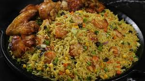

Home

Homemade Nigerian Fried Rice
Nigerian fried rice is a colorful and flavorful rice dish made by stir-frying pre-cooked rice with vegetables, spices, and protein.
It is known for its vibrant look and rich taste, usually achieved by cooking the rice in stock and seasoning before frying. The dish is prepared with
mixed vegetables, onions, curry, thyme, and sometimes liver or shrimp to give it a distinct Nigerian flavor.
What makes Nigerian fried rice special is its combination of aroma, color, and taste. It is commonly served at parties, celebrations, and gatherings,
often alongside dishes like fried chicken, coleslaw, or moi moi. The result is a festive, tasty, and satisfying meal enjoyed across Nigeria.
Ingredients
- Parboiled rice
- Chicken stock
- Vegetable oil
- Onions
- Carrots
- Green beans
- Green peas
- Sweet corn
- Bell peppers
- Chicken liver (optional but traditional)
- Curry powder
- Thyme
- Salt
- Seasoning cubes
- Garlic (optional)
- Ginger (optional)
Steps
- Cook the rice: Parboil rice and cook it with chicken stock and seasoning until partially cooked, then allow it to cool.
- Prepare ingredients: Chop vegetables and cut chicken liver or other proteins into small pieces.
- Cook protein: Fry or boil chicken liver or meat and set aside.
- Stir-fry vegetables: Heat oil in a pan and sauté onions, then add carrots, green beans, peas, and sweet corn.
- Add seasoning: Add curry, thyme, salt, and seasoning cubes to enhance flavor.
- Add rice: Pour in the cooked rice and stir thoroughly to mix with vegetables and seasoning.
- Add protein: Add cooked chicken liver or meat and mix well.
- Finish cooking: Stir-fry on medium heat until everything is evenly combined and fragrant.
- Serve: Serve hot with fried chicken, coleslaw, or other side dishes.